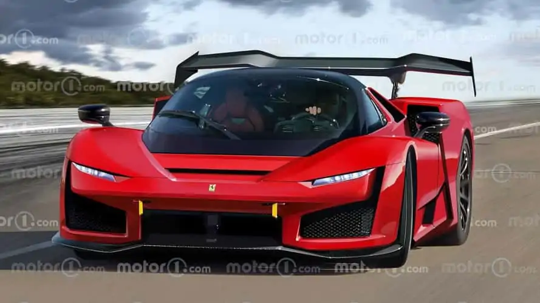
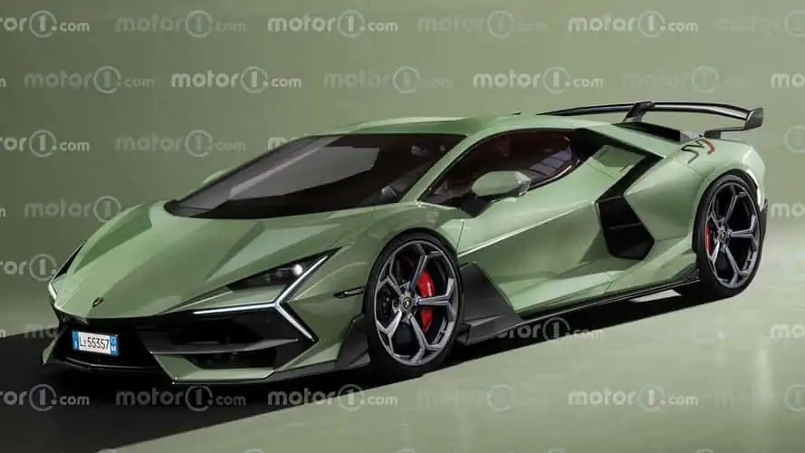
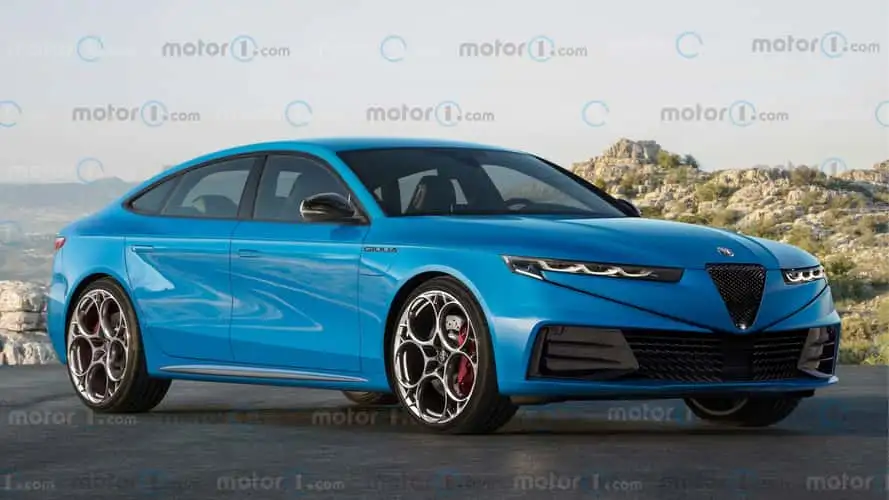
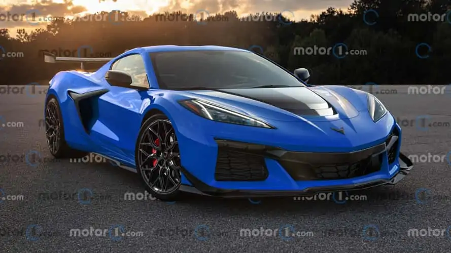
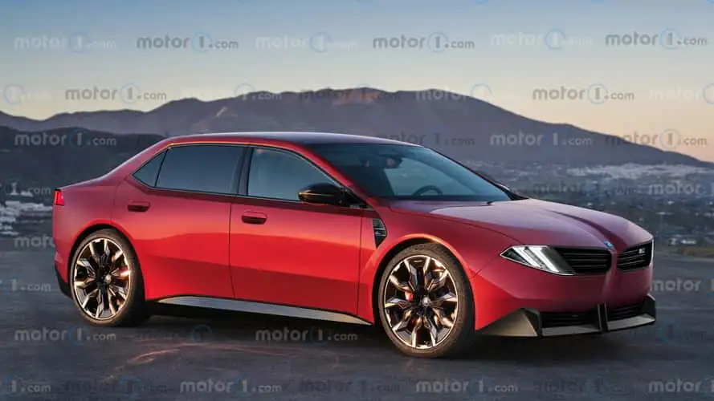
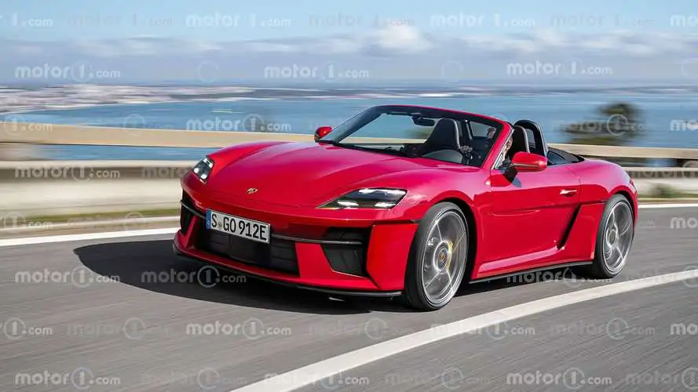

A notícia mostra que os modelos de ponta estão ultrapassando limites que pareciam reservados apenas ao imaginário: hipercarros híbridos com motores monstruosos, como o Bugatti Tourbillon com seu V16 híbrido de 1.775 cavalos.
Algumas marcas seguem associadas ao que sempre as definiu — o motor a combustão, o som inconfundível, cada vibração —, mas fazem isso com refinamentos modernos. O Ferrari 12Cilindri, por exemplo, continua com V12 aspirado, buscando manter a emoção clássica.
A eletrificação aparece como componente central das novas máquinas. Ela é usada para obter desempenho (aceleração, potência), eficiência e para reduzir emissões — tudo isso sem deixar de lado o prazer da pilotagem.
A matéria também diferencia dois mundos: os hipercarros, extremamente exclusivos, caros, de produção limitada e cheios de inovações de engenharia; e os superesportivos, que oferecem desempenho altíssimo com mais praticidade e custo relativamente mais acessível.
Entre os destaques de 2025 estão:
Bugatti Tourbillon — V16 híbrido, 1.775 cv, produção ultralimitada.
Ferrari 12Cilindri — V12 aspirado, mais de 800 cv, com foco na experiência emocional.
Porsche 911 Turbo S / GT3 RS— mais de 650 cv, equilibrando dirigibilidade de pista com uso “civilizado”.
Lamborghini Revuelto— híbrido plug-in com V12, visual agressivo, potência de mais de 1.000 cv.
Chevrolet Corvette Z06— motor V8, cerca de 670 cv, com grande custo-benefício para quem busca performance extrema.
Além dos números, o artigo enfatiza que esses carros continuam sendo objetos de desejo. A emoção, a liberdade e o status permanecem centrais, seja no ronco de um V12 clássico ou na aceleração instantânea de um híbrido moderno.
Quer que eu resuma esse conteúdo em um texto curto e direto, como se fosse para redes sociais, ou prefere manter esse estilo mais detalhado e jornalístico?



|
   |
|  | |